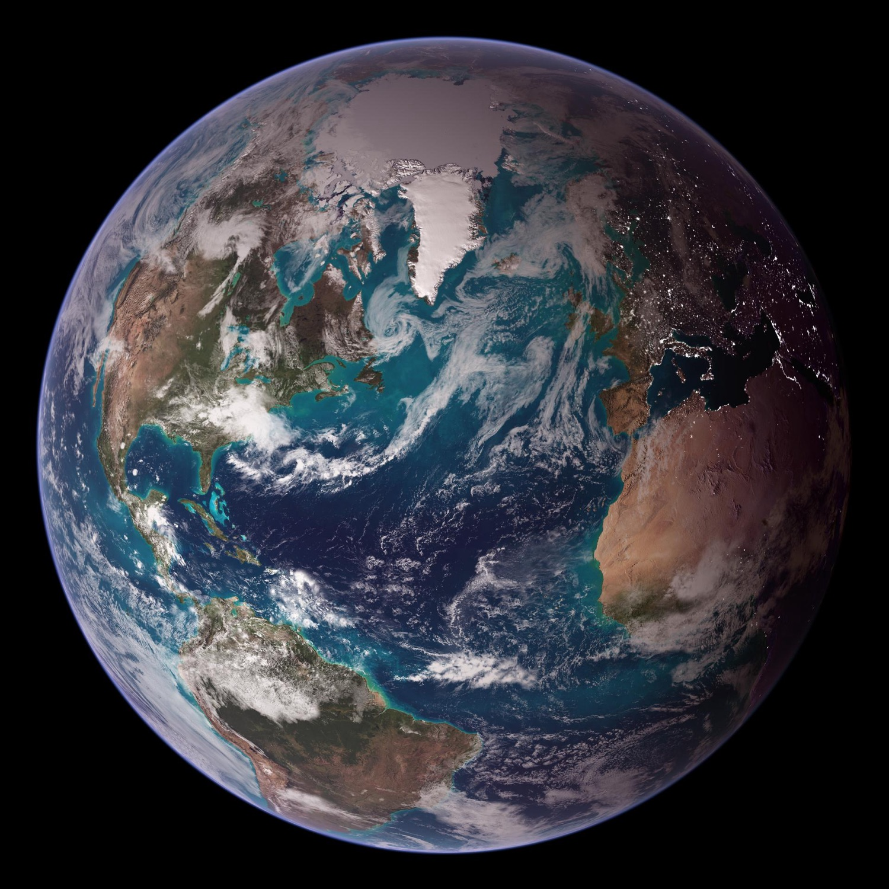
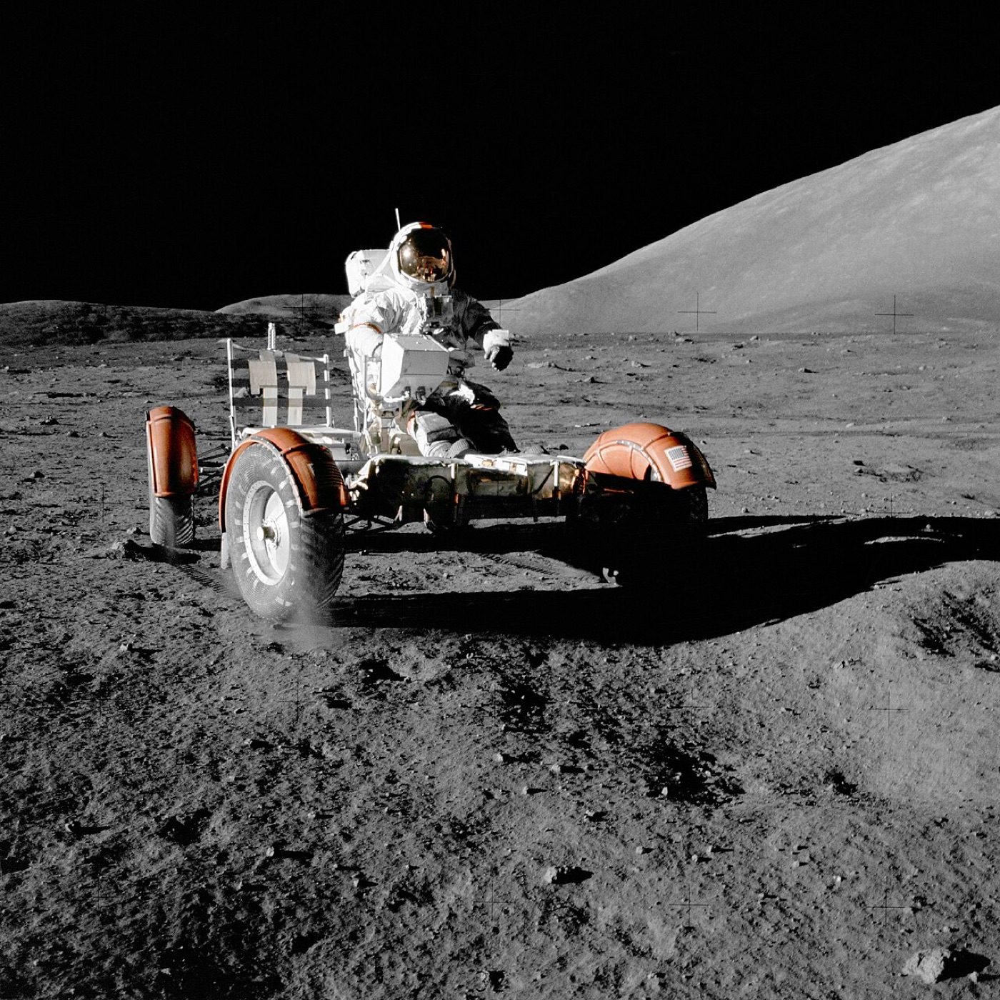

The Otherworld Atlas is an interactive three-dimensional web application
which contrasts terrestrial sites with lunar and martian analogues by
combining planetary illumination analysis with NASA's real world climate data.

Explore3D Earth Globe
CompareMoon & Mars Modes
ObserveNASA POWER · 2025 Climate
01 / KEY FEATURES
A map beyond our world.
01
3D Earth Globe: Displays analog sites on a locally hosted NASA 3D Earth model.
02
Moon & Mars Modes: Compares Earth locations against lunar and Martian environments.
03
Flexible Navigation: Opens profiles via globe markers.
04
Filters & JSON Export: Filters map locations and exports site profiles.
05
NASA POWER 2025 Climate: Loads live 2025 daily averages for temperature, wind speed, and solar radiation.

Apollo Lunar Roving Vehicle
02 / COLLABORATORS
The people mapping elsewhere.
CY
Chetan YSBengaluru, Karnataka
JP
Jiana ParmarMumbai, Maharashtra
RS
Rayyan SheikhFaridabad, Haryana
DZ
Dhiaan ZaveriMumbai, Maharashtra
VD
Vanshika DeorukhkarMumbai, Maharashtra
AS
Angel SainiFaridabad, Haryana
Step onto another world.
WHAT ASTRONAUTICAL ATLAS DOES
From a mission question to an Earth field candidate.
One lightweight, explainable workflow for exploring Earth environments as Moon and Mars analogs.
01
Requirement-led search
Choose environmental targets and scan a land-only, approximately 15 km equal-area grid for ranked cells. Results are computed in a browser Web Worker.
02
Map-first inspection
Review candidate coordinates on a 3D Earth and open locations in a map for further terrain inspection.
03
Mapped quadrangle lookup
Select a scientific MC or LQ quadrangle on a flat equirectangular chart, then send its extent to the analogue model.
04
Source-aware results
Climate, elevation, grid resolution, formulas and data limitations are shown so users can judge what a match does—and does not—mean.
QUADRANGLE API
Model service
The analogue ranking runs as a local FastAPI service in the api folder and returns ranked Earth analogues for the selected quadrangle.
QUICK START
A simple guide to the analog search.
You do not need a GIS background to try a search. Follow these steps, then treat the results as candidates to investigate.
01
Choose Moon or Mars
This sets the exploration context. It does not imply Earth can reproduce the full off-world environment.
02
Select a mapped quadrangle
The left panel shows the flat LQ or MC chart. Click a cell or pick a quadrangle from the list; its latitude/longitude extent is sent to the analogue model.
03
Scan the land grid
A background worker scores roughly 575,000 land tiles at approximately 15 km equal-area resolution and returns the best candidates without blocking the interface.
04
Inspect candidate locations
Choose a ranked result or globe marker to focus the map. A 0.25° cell is broad regional context—not a rover traversability map.
05
Read where the analogue breaks
Every candidate opens with a field-by-field breakdown: which parameters hold, which drift into caution, which fail outright, and which fields cannot be scored at all because no comparable Earth measurement exists.
06
Plan the missing tests
Confirm wheel traction, dust, thermal-vacuum, power and communications behavior with dedicated test rigs and validated data.
OPTIONAL WALKTHROUGH
Rover field-planning example
A visual example only—not official data, an engineering simulation, or a rover qualification result.
CANDIDATES, NOT CERTIFICATIONS
Grid results and researched references.
Global scan results are ranked from the four Earth-grid fields you selected. Curated Moon and Mars profiles are separate, source-linked references; they never change the scan or its ranking.
Grid matches are screening candidates—not named analog sites
Each result is a broad grid cell. Ranking is not independent site validation, a mission recommendation, or proof that Earth reproduces off-world conditions.
Latest global scan
Run a global scan to see ranked cells here.
CURATED MOON / MARS PROFILES · NOT SCORED
Named profiles are taken only from the supplied research workbooks where included fields have a cited source and an explicit measured label. Browse 20 names at a time; these profiles are not global-scan results or current Earth climate data. Some lunar and Martian citations are historical foundational research; publication and observation dates remain in the cited records.
Loading cited reference profiles…
Show profile citations
Why some supplied spreadsheet fields are not included
GRID SCORING
How the current ranking works
The browser worker compares the active temperature, elevation, slope and aridity targets with the corresponding Earth-grid fields. User weights control each field's contribution; a zero weight excludes that field. The score is a relative ranking within this dataset—not a probability, qualification score, or claim that a location reproduces lunar or Martian conditions.
This visual example shows how a team might use a broad Earth-grid match as a starting point for field questions. It is not a NASA product, validated simulation, site recommendation, or rover qualification result.
Local project model asset · source and redistribution license are not documented here; verify before reuse.
01
Start with a candidate
Use a scan result to identify a broad region for follow-up—not to select a landing or traverse route.
02
Frame field questions
Ask what dedicated measurements are needed for traction, dust, thermal behavior, power, communications, and terrain hazards.
03
Validate independently
Grid-scale climate and terrain proxies cannot establish wheel performance, safety, or mission readiness.
EXTRATERRESTRIAL NEXUS · THE TEAM
Six people mapping elsewhere.
Astronautical Atlas was built by a six-person team working out of Bengaluru, Mumbai and Faridabad.
CY
TEAM LEADER
Chetan YS
Bengaluru, Karnataka
DZ
TEAM
Dhiaan Zaveri
Mumbai, Maharashtra
RS
TEAM
Rayyan Sheikh
Faridabad, Haryana
JP
TEAM
Jiana Parmar
Mumbai, Maharashtra
AS
TEAM
Angel Saini
Faridabad, Haryana
VD
TEAM
Vanshika Deorukhkar
Mumbai, Maharashtra
THE BUILD
Open data, browser-side search.
Climate, elevation and quadrangles come from public NASA, USGS and TerraClimate products. The analogue ranking runs in a small local model service; the grid scan runs entirely in the browser.